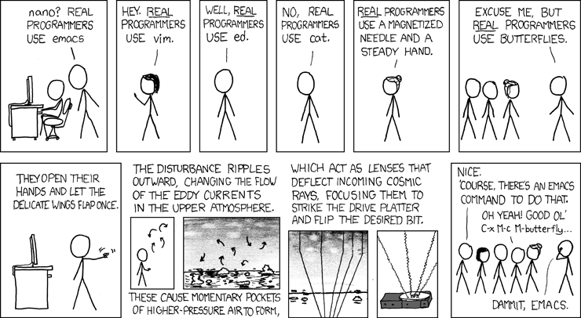

Emacs Elevator Pitch
Only Emacs can save your soul
{kind=link}

(I'm not particularly familiar with English, and this blog post was translated from Chinese. Some expressions might be a bit awkward, please bear with me. (´･_･`) )
This is a submission for Jeremy Friesen's Emacs Carnival 2025-08: Your Elevator Pitch for Emacs.
{kind=link}
I thought it might be interesting to fill an elevator with various slogans about Emacs, so people are surrounded by Emacs, hahaha.
Here are the slogans I plan to post:
(It's best to read on a desktop webpage; try hovering your mouse over Emacs !)
(≖ᴗ≖๑)
While any text editor can save your files, only Emacs can save your soul.
Emacs takes a lifetime to learn. So the sooner you start, the longer it will take.
People don't quit Emacs. They just die at some point.
;; Happy hacking, Emacs ♥ you!
No two Emacs will be the same, just as no two users are the same.
Before Emacs: vim, htop, weechat, taskwarrior, xterm
After Emacs: Emacs, Emacs, Emacs, Emacs, Emacs
If you are a professional writer–i.e., if someone else is getting paid to worry about how your words are formatted and printed– Emacs outshines all other editing software in approximately the same way that the noonday sun does the stars.
It is not just bigger and brighter; it simply makes everything else vanish.
The specialized app user lives in rented apartments;
the Emacs devotee walks through an ever-expanding mansion whose rooms rearrange themselves to their thoughts.
Emacs can read yesterday’s formats, be reprogrammed for today’s needs, and will still be licensed for your use tomorrow.
…Emacs is a tool that rewards practice, I tried to pick it up twice before the third time. And it was once I started practicing that it stuck.
I’m forced to use Emacs for this particular task, but I sure wish I could use something else.
Emacs works for you, you won't work for Emacs.
If you like working and thinking with text, you will love Emacs: anything you want your computer to do, Emacs can do in text form.
Emacs Elevator Pitch (August Blog Carnival) | Christian Tietze
Emacs is a piece of software with a "killer feature" around every corner[…]
Emacs offers something unique, the ability to run any code on any data.
Emacs is essentially a sandbox for a text based computing environment.
An excessive knowledge of
MarxismEmacs is a sign of a misspent youth.John McCarthy
A combination of consistent reading habits and the ease of trial and error that Emacs provides makes it possible to learn Elisp by doing more with it, one small step at a time. This is how every Emacs user can learn to program in Emacs Lisp or, at least, better understand what their tool is doing. Such is the realisation of the promise of free software: everyone, not just professional programmers, benefits from it. And is why, in my opinion, Emacs epitomises the stated objectives of the GNU project for software freedom: it incorporates them and puts them to practice, all in one powerful program.
Introspecting Emacs by Protesilaos Stavrou
If you've finished reading, are you interested in trying Emacs? Come save your soul! :P
{kind=link}
If you'd like to hear my pitch, I'll start now :)
I initially used VSCode quite a lot.
Later, I wanted to try out Vim, so I installed a Vim plugin in VSCode.
After getting used to it for a while, I then wanted to experience a more complete Vim, which led me to switch from VSCode to Vim.
The Vim configuration I used is amix/vimrc, which is excellent.
I used Vim for quite a long time, mainly for programming and writing blog posts, but I rarely modified its configuration and wasn't very familiar with its Vim Script.
Vim and Emacs are always being compared, and perhaps out of curiosity, I decided to try Emacs. I've been using it since 2019 and continue to do so now; I probably won't ever leave it.
The tutorial I used to get started: master emacs in one year, and the configuration used: purcell/emacs.d. Many thanks to them.
I mainly use Emacs for these tasks:
- Writing code
Writing blog posts
- Taking notes, primarily using denote
Managing my schedule and implementing GTD (Getting Things Done)
If you're interested in GTD, you can check out:
- Getting Things Done (GTD) by David Allen - Animated Book Summary And Review
- OrgMode tutorial | Rainer König (Great org-mode and GTD tutorials)
- An RSS reader, such as elfeed
- An LLM chat tool, such as gptel
- Tinkering with Emacs, constantly adjusting configurations to suit my needs
I like Emacs because:
- Emacs's interface is very clean. Through customization, you can keep only a main window, without a file directory, without a top menu, just code and text.
- Emacs doesn't require memorizing a ton of shortcuts; once you're familiar with the main few, the rest can be explored via completion in the minibuffer.
- Emacs's documentation is very friendly. For functions you don't understand,
executing
M-x describe-functionwill tell you how to use them; variables can also be queried viaM-x describe-variable. - Emacs has some very well-designed packages, such as org-mode, magit, denote, consult, corfu …
The designers of these packages have thought through everything thoroughly,
making them very convenient to use. I consider
magitto be the best Git tool, bar none. - Emacs can be customized entirely by you.
Many operations in Emacs are essentially Elisp functions;
for example, moving the cursor right by one character corresponds to the
forward-charfunction, which is default-bound toCtrl-f. If you wish, you can even override this function to customize your desired behavior. You can make Emacs whatever you want it to be, creating your own unique Emacs, whereas many other editors don't offer such high levels of openness. - Emacs has a great community. For example, Emacs China, which I frequently visit, has many knowledgeable people who are also very friendly and help others. I also really like the tutorials shared by Protesilaos Stavrou and the Emacs News compiled by Sacha Chua. You can also subscribe to Planet Emacslife to learn how numerous Emacs users utilize Emacs.
- Emacs (GNU Emacs) is very old, it was born in 1984 and is now 41 years old, standing the test of time. Emacs is also very young, it keeps pace with the times, quickly integrating new technologies as they emerge, such as the recent popular LLM.
Having said that, using Emacs does have a barrier to entry, but once you overcome the initial friction, Emacs will reward you. I believe Emacs is worth trying. "Emacs gud".